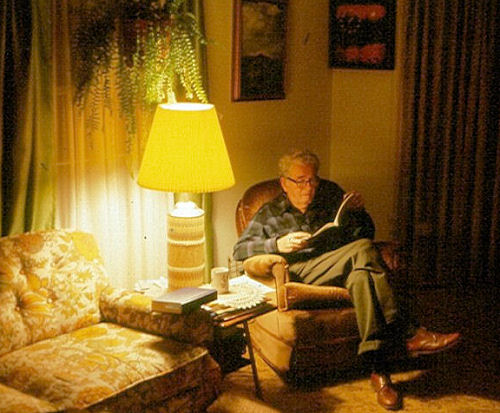

| Grandpa's Old House, Written By Bob's Mom | |
 |
Photo: Bob's Dad, 1984, in the house he built. This is one of the last pictures taken of him. Grandpa said "I am going to have to build a house before we get married." This was 1930. So he got some boards and nails and a hammer and a hand saw and built two rooms. Then Grandma and Grandpa were married. The next year a tiny little girl with a dimple came to live at the house. So Grandpa got some more boards and nails and a hammer and the hand saw and built some more rooms. Seven years later a handsome little boy with a bald head showed up. So Grandpa got some more boards and a hammer and nails and the old hand saw and built some more rooms. |
|
Many years later, Grandma said "Grandpa you’re very sick and I don’t want to live in this old house by myself." So a "For Sale" sign was put out on the old tree out front. Two weeks later the Angels came and took Grandpa to his new home. Two months later the old house was sold. Grandma wondered what to do with some of the money from Grandpa's old house. It cost just about $2000 and many hours of hard work with an old hand saw to build the house. Four thousand dollars went to the new "Family Center" at the church (Arden Church), one thousand dollars to help repair the old (church) roof. Two pedigreed kittens were bought at the pet shop for people unknown. Three Easter dresses for little girls unknown. Seven hundred dollars for young people to go to convention. Various small amounts for different needs.
Two years later the old house was sold again. (to the church next door) It is no longer a house but a building where children come every Sunday morning and learn about Jesus. Young people gather in the big living room where they worship and have social affairs. The little church next door was just waiting to occupy the old house. I think this has been a good investment for $2000 and a lot of hard work with an old hand saw. If there is any money left from Grandpa's old house when Grandma goes to her new home, 1/3 of it goes to the Arden Church of the Nazarene. Signed, Grandma Clara Fairbairn March 10, 1988 - Almost 10 years older – Jesus found work for me to do for my Grandchildren (kids in her apartment building) and others. I am not alone. I am happy with Jesus. (In 2002, Grandma went to be with Grandpa in Heaven. Today, nothing remains at the site of the old house, except for one of the elm trees that was planted by Bob's Dad.) |
|